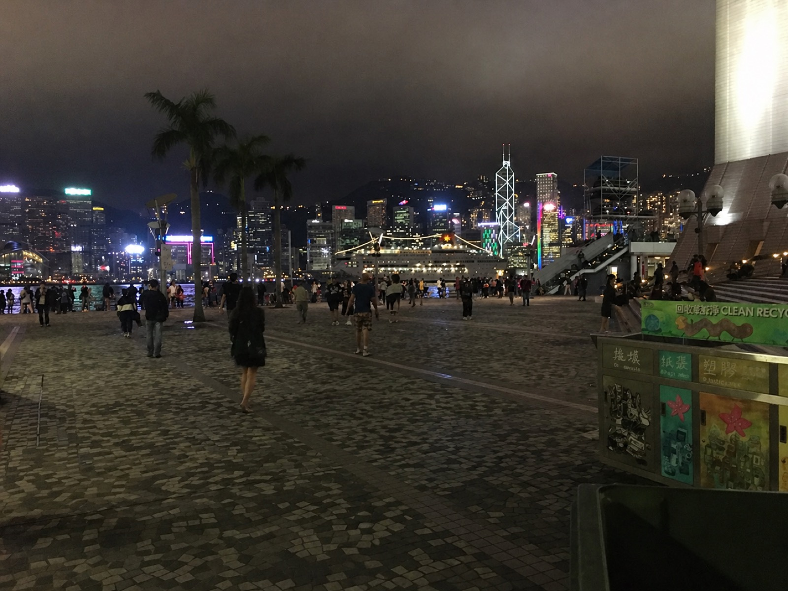
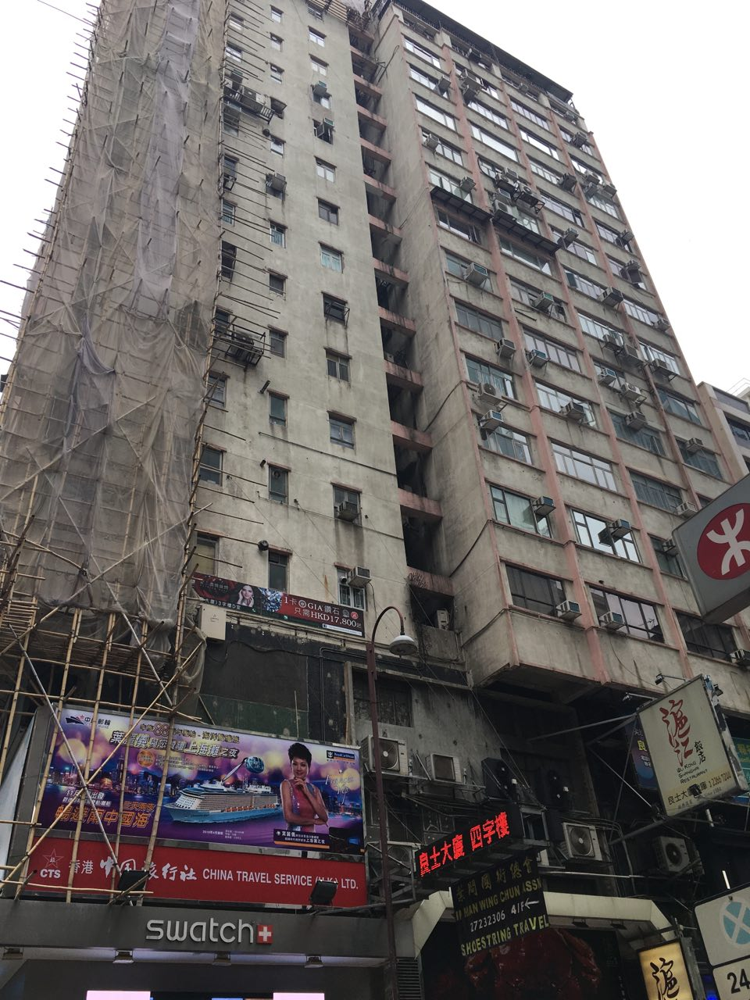
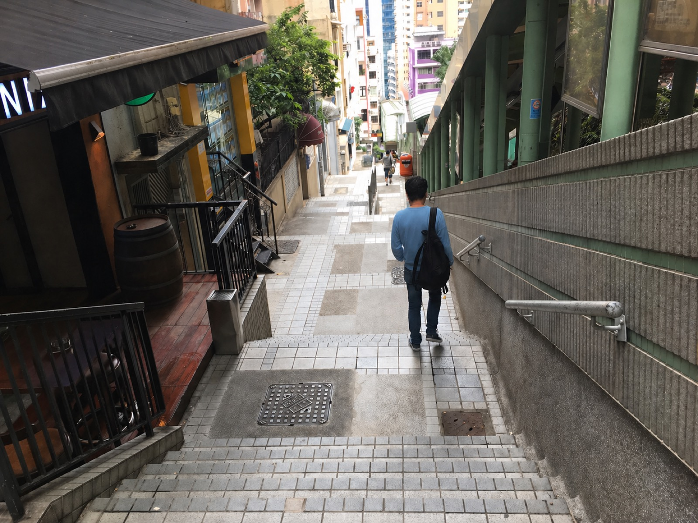
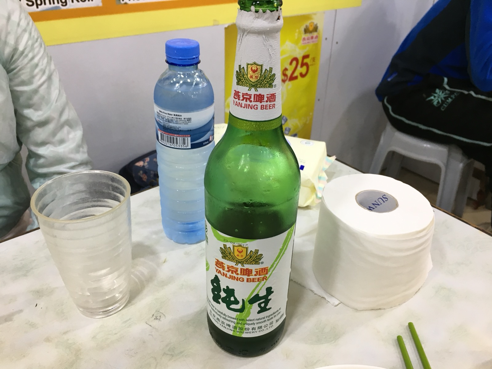

홍콩. 아내와 두 번째로 갔던 여행지다. 아직 중국에 완전히 합병되기 전, 그 특유의 느와르 감성이 거리 곳곳에 고스란히 남아있던 시절이었다.

뭐니뭐니 해도 홍콩은 분위기다. 한쪽엔 금방이라도 무너질 듯한 낡은 아파트, 다른 한쪽엔 명품이 즐비한 백화점. 그 사이로 난 길을 걸으며 느끼는 묘한 기분이 있었다. 야릇함과 아이러니함이 동시에 밀려오는 느낌.
100년 가까운 식민의 흔적과 21세기 글로벌 금융가의 고층 빌딩이 같은 프레임 안에 들어 있는 순간들. 그 자체로 시대가 한 컷에 압축돼 있었다.

이중언어 표지판, 빨간 우체통, 광동어 특유의 끊어 부르는 리듬. 그리고 약속처럼 항구에 떠 있던 정크선의 붉은 돛. 도시 전체가 마지막 한 신을 찍고 있는, 그것이 인생이라 말하는 영화의 한 장면 같았다.

이제는 내 기억 속에서만 남아있는 풍경이다. 현실에 더는 없기에, 그 추억은 오히려 온전히 좋은 기억으로 남게 됐다.
그때 길거리 음식도 먹고, 걷다가 눈에 띄는 신기한 것들을 이것저것 다 먹어치웠지만, 아내는 한결같이 '식당'을 고집했다. 가장 기억에 남는 건 마지막 날 먹었던 게 요리와 맥주.

그립다. 하지만 다시 경험할 순 없다. 마치 인생처럼 말이지.